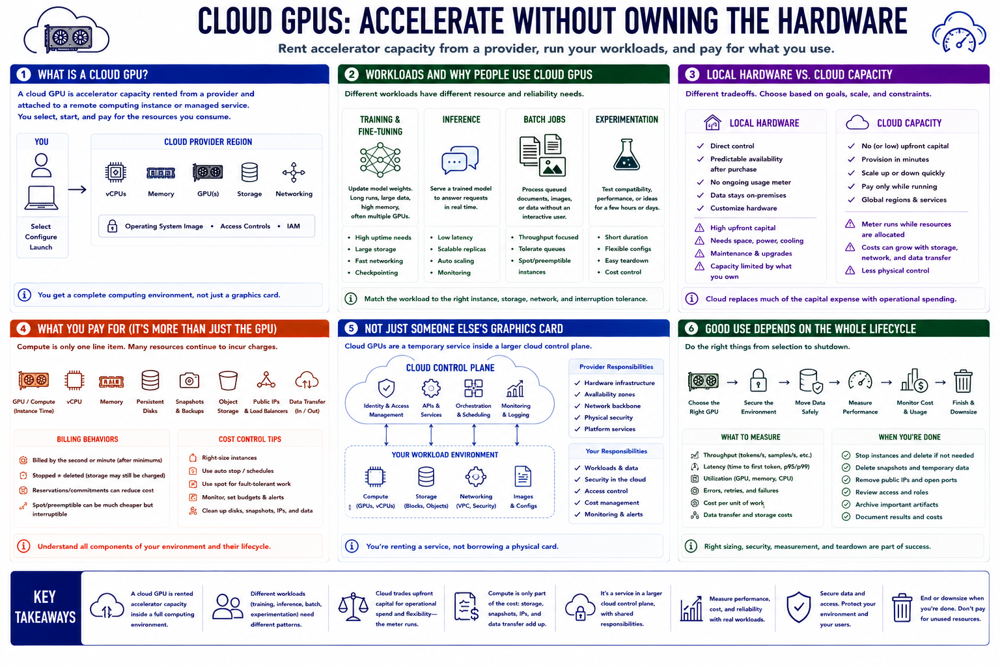

What Are Cloud GPUs?
Connecting to LMS... Progress: in progress

Narration
A cloud GPU is accelerator capacity rented from a provider and attached to a remote computing instance or managed service. Instead of purchasing, installing, and maintaining a graphics processor, a user selects an available GPU configuration, starts it in a provider region, and pays for the resources consumed. The instance normally includes virtual CPUs, system memory, storage, networking, an operating system image, and access controls in addition to the GPU itself.
Cloud GPUs support several workload types. Training and fine-tuning update model weights and can require long runs, high memory, and multiple accelerators. Inference loads a trained model to answer requests. Batch jobs process queued documents, images, or data without an interactive user. Experimentation may need a powerful GPU for only a few hours to test compatibility or performance. Each pattern has different requirements for uptime, storage, network transfer, and interruption tolerance.
Local hardware offers direct control and predictable availability after purchase, but it requires capital, physical space, power, cooling, and maintenance. Cloud capacity replaces much of that initial capital cost with operational spending. It can be provisioned quickly and released when the work ends, but the meter continues while resources remain allocated. Compute is only one charge; persistent disks, snapshots, object storage, public addresses, and data transfer may continue independently.
Cloud GPUs are therefore not simply someone else's graphics card. They are a temporary service embedded in a larger cloud control plane. Good use depends on selecting the right accelerator, securing the surrounding resources, measuring performance, protecting data, and ending or downsizing the environment when its purpose is complete.